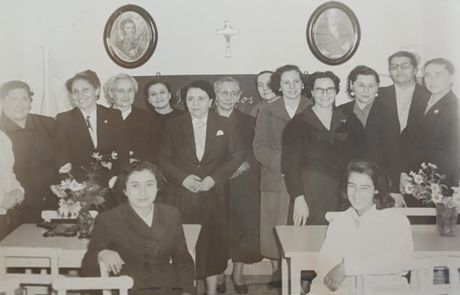
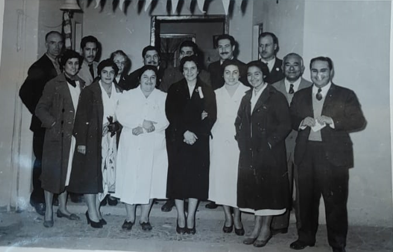
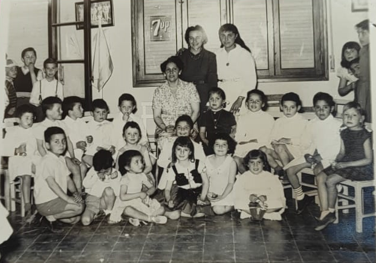

Escuela

Inauguración del Jardin de Infantes 20 de Junio, que da origen a la escuela. Año 1957.

Foto: Primeras maestras, acompañadas por la Sra. De Rossi y vecinos del barrio.
La escuela se crea por Resolución 487. Decreto 3578 del 10 de abril de 1958
